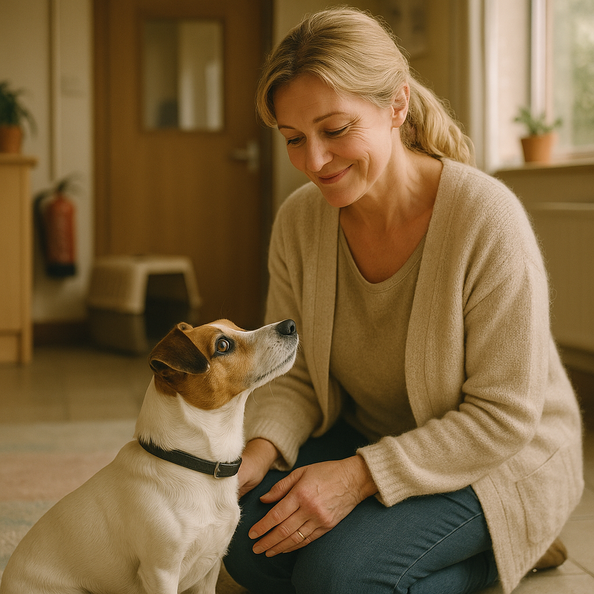
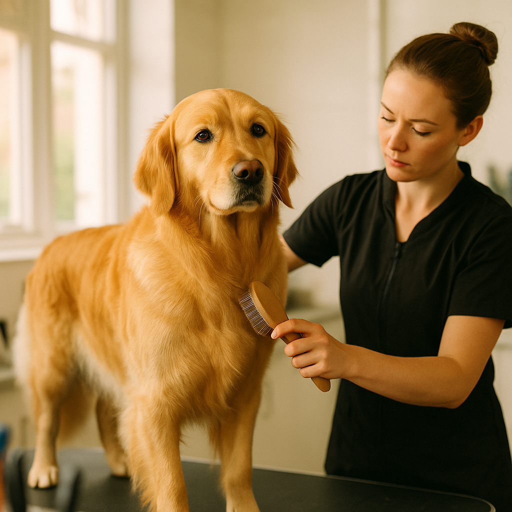

How Much Does It Cost to Own a Dog in the UK? (2026 Breakdown)
Contents
Introduction
Getting a dog is one of the best decisions you can make — but it's also a significant financial commitment. Unlike adopting a cat (which costs around £200–500 annually), dogs consume more food, need regular grooming, and their vet bills tend to be higher.
The real cost of dog ownership often shocks new owners. It's not just the food and insurance. It's training courses, grooming, replacement leads after they're chewed, dental care, emergency vet visits... the list goes on.
Let's break down exactly what you'll spend from day one through the lifetime of your dog, so you can budget properly and avoid nasty financial surprises.
Quick Answer
Expect to spend £2,000–4,500 in year one (including purchase/rescue fees and initial costs), then £1,000–3,000 annually ongoing depending on dog size and any health issues. This breaks down roughly as: food (£400–1,200/year), insurance (£200–500/year), vet care (£200–400/year), grooming (£100–500/year), accessories (£100–300/year).
First Year Costs
Dog Purchase or Adoption
- Purebred puppy from breeder: £800–3,000+ depending on breed
- Rescue dog: £100–300 (adoption fee)
- Puppy from online seller (not recommended): Variable, but often £200–1,000
Always rescue if possible. Not only will you save money, you'll avoid the health problems that plague poorly bred puppies. Rescue dogs cost a fraction of puppies and often come already housetrained.

Initial Vaccinations & Health Checks
- Primary vaccination course (puppy): £100–200 for full course (3 visits)
- Health check at adoption: £40–80
- Microchipping: £15–30
- Flea & worm treatment (first 6 months): £60–120
Neutering/Spaying
- Dog spaying: £150–350
- Dog castration: £100–250
This is essential and should be done between 6–12 months of age, unless your rescue was already neutered.
Essential Supplies & Equipment
- Collar, lead, tags: £30–80
- Dog bed/crate: £40–150
- Food & water bowls: £15–40
- Toys, treats, enrichment: £50–100
- Grooming supplies (brush, nail clippers, etc.): £30–80
- Food storage containers: £20–50
Training Classes (Optional but Recommended)
- Puppy socialisation class: £60–150 (6-week course)
- Basic obedience class: £80–200 (8-week course)
Training classes are an investment that prevents thousands in damage and behavioural issues later.
First Year Total
Rescue dog: £1,000–2,000 (lower because already neutered, minimal initial healthcare)
Puppy from breeder: £2,000–4,500+ (includes purchase price, full vaccination course, neutering, equipment, training)
Annual Ongoing Costs (Years 2+)
Pet Insurance
- Young dog, good health: £20–40/month (£240–480/year)
- Senior dog (7+ years): £40–80/month (£480–960/year)
- Dog with pre-existing conditions: £60–120/month or higher
Insurance is the single most important expense. It transforms a potential £3,000 emergency bill into a manageable claim. Never skip this.
Food (Annual)
This varies wildly depending on dog size and food quality:
- Small dog (Under 10kg) on budget food: £300–500/year
- Small dog on premium food: £600–900/year
- Medium dog (10–25kg) on budget food: £600–900/year
- Medium dog on premium food: £1,000–1,500/year
- Large dog (25kg+) on budget food: £800–1,200/year
- Large dog on premium food: £1,500–2,000/year
Premium foods from brands like Butternut Box or Tails.com cost more upfront but often mean fewer vet visits due to better nutrition and fewer fillers.
Routine Vet Care
- Annual booster vaccination: £40–70
- Annual health check-up: £50–100
- Flea & worm treatment (12 months): £100–200
- Unplanned illness visit (average): £100–300
Total annual vet care (without major procedures): £200–400 if insured; much higher if you're paying out of pocket.

Grooming
- Low-maintenance coat (Labradors, short-haired breeds): £0–100/year (DIY baths only)
- Medium-coat breeds (Spaniels, Collies): £100–300/year (2-4 professional grooms)
- High-maintenance coat (Poodles, Doodles, Terriers): £300–600+/year (every 6-8 weeks)
A professional groom typically costs £40–80 per visit depending on dog size.
Accessories & Replacements
- New collar, lead, ID tags: £20–50 (every 1-2 years)
- Replacement toys and bedding: £50–150/year
- Treats and chews: £100–200/year
Annual Ongoing Total
Small dog, budget food, minimal grooming: £600–900/year
Medium dog, average food, regular grooming: £1,200–1,800/year
Large dog, premium food, professional grooming: £2,000–3,000+/year
Plus any emergency or unexpected health issues, which can run into thousands.
Estimated Annual Cost by Dog Size
Small Dogs (under 10kg) — Chihuahua, Yorkshire Terrier, Dachshund
- Food: £300–500
- Insurance: £200–350
- Vet care: £200–350
- Grooming: £100–250
- Accessories: £100–200
- Total: £900–1,650/year
Medium Dogs (10–25kg) — Cockapoo, Border Collie, Cocker Spaniel
- Food: £600–1,000
- Insurance: £250–400
- Vet care: £250–400
- Grooming: £150–400
- Accessories: £100–200
- Total: £1,350–2,400/year
Large Dogs (25kg+) — Labrador, German Shepherd, Golden Retriever
- Food: £900–1,500
- Insurance: £300–500
- Vet care: £300–500
- Grooming: £100–300
- Accessories: £150–250
- Total: £1,750–3,050/year
Complete Annual Cost Breakdown Table
| Category | Small (Under 10kg) | Medium (10-25kg) | Large (25kg+) |
|---|---|---|---|
| Food | £300–500 | £600–1,000 | £900–1,500 |
| Pet Insurance | £200–350 | £250–400 | £300–500 |
| Vet Care | £200–350 | £250–400 | £300–500 |
| Grooming | £100–250 | £150–400 | £100–300 |
| Accessories | £100–200 | £100–200 | £150–250 |
| ANNUAL TOTAL | £900–1,650 | £1,350–2,400 | £1,750–3,050 |
These are estimates. Actual costs vary by location, dog breed, food choice, and any health issues. The ranges account for budget vs premium options.
Ways to Save Money on Dog Ownership
1. Get Insurance Young & Keep It
The earlier you insure, the cheaper monthly premiums are. A £25/month policy saves thousands in a single emergency.
2. Buy Food in Bulk or via Subscription
Fresh food delivery services like Butternut Box or Tails.com offer discounts for monthly subscriptions. Standard supermarket food is cheaper upfront but often leads to digestive issues and more vet visits.
3. Groom at Home When Possible
Learn to bathe and brush your dog yourself. Only use professional groomers for complex cuts or when absolutely necessary.
4. Use Preventative Care
Regular vaccinations, flea/worm treatment, and dental care prevent expensive problems later. A £200 dental cleaning is far cheaper than treating a severe infection.
5. Rescue, Don't Buy
Rescue dogs cost £100–300 to adopt versus £1,000–3,000+ for a puppy. Most are already housetrained and past the destructive puppy phase.
6. Keep Your Dog Fit
Obesity in dogs leads to joint problems, diabetes, and short lifespans. Regular exercise and appropriate food weight prevent costly health issues.
7. Ask About Wellness Plans
Some vets offer annual wellness packages bundling vaccinations, checks, and microchipping for £100–200, saving money over separate visits.
Key Takeaway
Budget £1,000–3,000+ annually for a dog, with the first year running closer to £2,000–4,500 due to initial costs. The biggest ongoing expenses are food, insurance, and routine vet care. Pet insurance is non-negotiable and transforms potential emergencies from financial disasters into manageable claims. Rescue a dog if possible (cheaper and just as rewarding), invest in preventative care, and remember that every pound spent on insurance and prevention saves ten in emergencies and disease treatment later.